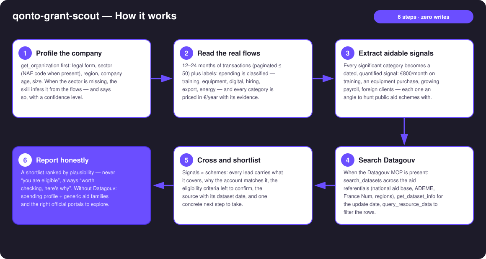
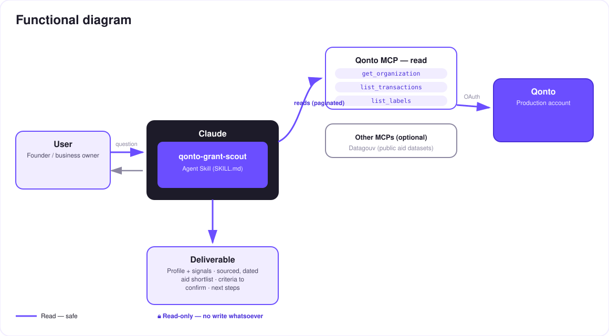

Your bank account knows what you invest in — public databases know who gets helped for it. This skill introduces them.
France runs hundreds of public aid schemes for small businesses — and most SMEs claim none of them, because nobody has time to dig. Yet the account already tells the story of what the company invests in. The skill makes the introduction:
Sector (NAF when present, inferred from the flows otherwise), region, size, age — all from the account, zero forms.
12–24 months of flows classified: training, equipment, digital, hiring, export, energy — each category priced in €/year.
Search across the public aid referentials — each dataset's update date is checked and displayed.
Every lead: criteria to confirm, dated source, one concrete next step. Never "you are eligible" — always "worth checking".
Would someone use this on a Monday morning? "Am I leaving public money on the table?" is a question every founder asks — and never has time to answer.
| Prerequisite | Detail | Required |
|---|---|---|
| Qonto production account | Adapts to any organization — get_organization first, nothing hardcoded | ✅ |
| Country | Scheme cross-referencing: France only (aid is national/regional). Other Qonto countries: spending profile only, generic families, no scheme ever invented | ℹ️ detected |
| Qonto MCP connected | Official connector (claude.ai / Claude Desktop), OAuth login | ✅ |
| Datagouv MCP | Unlocks the referential search. Absent: the skill says so and still delivers profile + aid families + official portals | ⭕ recommended |
| ≥ 12 months of history | Below that, fragile signals — stated (🟡 tags) | ⭕ |
| Qonto labels maintained | Sharpen spending classification (list_labels); counterparty-based otherwise | ⭕ |

get_dataset_info checks freshness; a dataset older than ~18 months degrades the lead's tagget_organization: inferred from counterparties, confidence lowered, user can correctlist_cash_flow_categories returns 403 on the claude.ai connector → fallback to list_labels · card spending matched by emitted_at · pagination ≤ 50 everywhere
Zero writes, and the banking data stays with Qonto: the skill creates no transfer, no invoice, no application. Only generic search keywords (sector, region, aid family) ever reach Datagouv — never an amount, a counterparty name, or an IBAN.
| Spending seen in the flows | Aid family | Examples (verify at the source) | Typical next step |
|---|---|---|---|
| Training (training bodies, e-learning, certifications) | Training funding | Training-fund (OPCO) coverage, FNE-Formation | Ask your training fund about coverage |
| Equipment / machinery | Regional investment aid | Regional council schemes | Check your region's economic desk |
| Digital (software, SaaS, website) | Digital transformation | France Num, regional digital vouchers | Go through a France Num advisor |
| R&D-like spending (prototyping, technical subcontracting) | Tax incentives | Research/innovation tax credits (CIR/CII), JEI status | Review with the accountant |
| Hiring / apprenticeship | Hiring aid | Apprenticeship aid, France Travail schemes | Simulate on the official portals |
| Energy / vehicles / works | Ecological transition | ADEME (Tremplin PME), energy-saving certificates | File on the ADEME portal |
| Export / foreign clients | International | Bpifrance Assurance Prospection, Team France Export | Contact the regional export advisor |
| Output | Format | When |
|---|---|---|
| Conversation reply | Markdown tables: profile + signals, sourced and dated shortlist, limits | Always — the baseline |
| Grant radar | HTML file/artifact: signals × aid families, leads at the intersections, 🟢🟡🔵 tags | When the host renders files (claude.ai artifacts, Claude Desktop, Claude Code); automatic fallback to tables |
| Per-lead brief | Ready-to-send text block (training fund, accountant, regional desk): signal, scheme, criteria, source | On request, for each retained lead |
The ≤ 3-minute demo attached to the PR walks through: the problem (aid nobody goes hunting for) → the profile emerging from the flows alone → the dated, sourced Datagouv search → the crossing (€9,600/year of training spend spotted → the exact scheme, the link, and what to ask the training fund) → honesty by design. It runs live on a real production account.
| Idea | Effort | Note |
|---|---|---|
| Quarterly re-scan: re-cross the profile, alert only on new leads | Low | Reuses the profile already built |
| Aides-territoires enrichment (dedicated API) | Medium | Often fresher — same dating discipline |
| Pre-filled email draft to the training fund / regional desk with the account's numbers | Low | Still zero writes — the user sends it |
| Country modules (DE: KfW · ES: ENISA · IT: Invitalia…) | High | Qonto is pan-European; v1 = France + country detection |